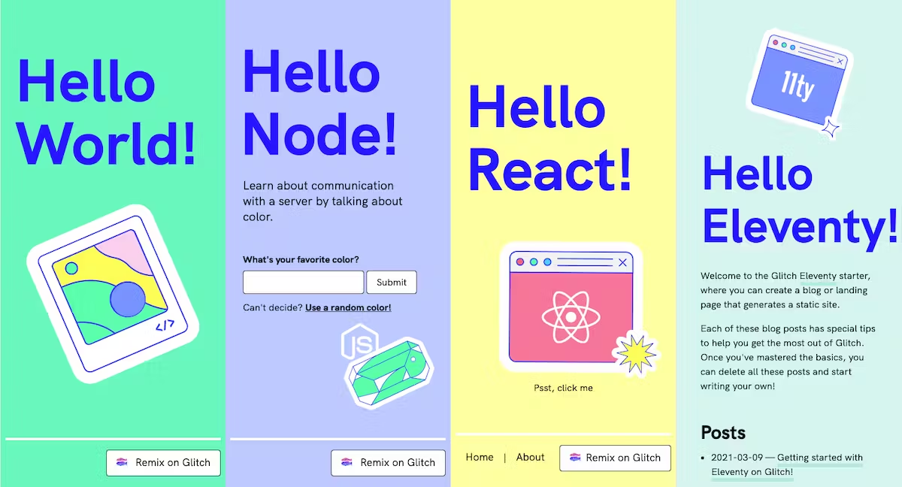

P5.genzine: Zine
As
Coding
Connectivity
by
Munus Shih
Thesis Faculty: Ever Bussey, Or Zubalsky, Xin Xin
Writing Faculty: Andrew Zornoza, Louisa Campbell
A thesis document submitted in partial fulfillment of the requirements for the degree of Master of Fine Arts in Design and Technology Parsons School of Design
May 2023
Fig 1. Introducing p5 in Open Source Art Contributor’s Conference
ABSTRACT
This paper offers an in-depth analysis of p5.genzine, an open-source and user-friendly library for creating and sharing zines online. By providing a collaborative and customizable approach to zine-coding, p5.genzine has transformed the traditional zine-making process, enabling artists, designers, creative coders and other creative professionals to create impactful and multi-player zines. The author argues that p5.genzine provides an experimental playground for underrepresented voices to share their stories, perspectives, and experiences, potentially contributing to a more diverse and inclusive creative landscape. This paper contributes to the ongoing dialogue surrounding the intersection of coding and zine-making, offering insights into the unique creative possibilities that emerge from this intersection and their potential for social change.
DEDICATION
I am deeply grateful to my thesis advisors, Ever Bussey, Or Zubalsky, and Xin Xin for their invaluable guidance and unwavering support throughout the development of this project. Their willingness to offer assistance and answer my research and creative inquiries has been instrumental in my progress. I would also like to extend my appreciation to the writing faculty, Andrew Zornoza and Louisa Campbell, for their constructive feedback and gentle nudges in the right direction when needed, allowing this paper to truly reflect my own work.
Special thanks go to my collaborators, including Iley Cao, who co-hosted the inaugural workshop during “Code, Decolonized”, and Nikki Makagianstar, my constant source of support and the catalyst behind the idea of “Coding Connectivity”. I am also grateful to Yenching Lu for collaborating with me on the fellowship project "beginContour". Their passionate involvement and valuable input have played an integral role in shaping the project's current state.
I would like to acknowledge the assistance provided by Qianqian from the Processing Foundation, Sarah Ciston with her amazing writings, and Tzuyun Wei from Pratt Institute. Their feedback and research insights have been immensely valuable in informing this thesis.
Lastly, I am profoundly indebted to my parents, my partner Weikai Cheng, and my best friend Hasan Khalid. Their unwavering support and constant encouragement throughout my years of study, research, and writing have been pivotal to this accomplishment. I am truly grateful for their presence in my life.
Munus Shih May 11, 2023
ACKNOWLEDGEMENT
A significant part of my inspiration for creative coding stems from the frustration I faced in traditional computer science education. When I first started learning to code, I was excited about its potential to connect people and make a positive impact on the world. I believed that coding was a powerful tool that could foster creative problem-solving and bring people together. However, my experience with traditional computer science courses left me feeling frustrated and uninspired.
These courses were primarily focused on learning programming languages like C++ and Java, but they failed to teach us how to create projects that could engage and connect people. Instead, we were asked to develop mundane programs such as bank account systems. While these systems could be technically challenging, they lacked the creativity and imagination I sought.
I vividly remember wanting to use code to build projects that would bring people together and create a sense of community. I felt trapped in a rigid system that left no room for creative expression. Although I desired to use technology for social change, the curriculum wasn't designed to accommodate such thinking. When I expressed my concerns to my professors, I was told that this was simply how the coding world operated and that if I couldn't handle the basics, I wasn't suited for more creative applications of code.
Fortunately, my passion for using code to build connections persisted. I embarked on a journey of self-discovery and exploration, searching for new avenues in creative coding. That's when I discovered p5.js, a web-based version of the Processing platform created by Lauren McCarthy in 2014. This accessible and adaptive JavaScript library aimed to make creative coding more approachable for artists, designers, educators, and beginners like myself.
With p5.js, I began experimenting and soon found myself immersed in the world of creative coding. I created interactive art installations, web animations, and other exciting projects that were not only technically challenging but also allowed me to explore my creativity and bring my ideas to life.
I was fortunate to study p5.js formally when I joined Parsons School of Design for my MFA in Design and Technology. Under the mentorship of Professor Xin Xin, I acquired the knowledge and skills to further explore creative coding and its potential for fostering connections and community. I want to thank them for always being supportive in my thesis process and everything else too.
Now, I'm writing to share my learnings with others interested in embarking on their own coding connectivity journey. My goal is to help others avoid the frustration and disillusionment I experienced in traditional computer science education and provide them with a roadmap for exploring the creative possibilities of code. I believe that code can be a powerful tool for building self-identity, connectivity, and community, and I hope this work inspires others to delve into the exciting world of creative coding.
TABLE OF CONTENTS
The Rise of p5.js and Creative Coding
The Hybrid Format to Its Limit
Additional Typography Functions
Call for Community Contributions
Write Tutorials or Documentation
Power Dynamics in Zine-Making & Forking
What Does Forking A Zine Looks Like?
Library-specific Function & General Production
Decolonial Approach For K12 Education
Multi-player With Communal Approach
LIST OF FIGURES
|
Figure 1 |
Introducing p5 in Open Source Art Contributor’s Conference |
i |
|
Figure 2 |
The science fiction fanzine |
8 |
|
Figure 3 |
Formosa Magazine, first published in August 1979 |
9 |
|
Figure 4 |
The logo of an open source publishing organization Pre Post Print |
11 |
|
Figure 5 |
The introduction video of basil.js |
12 |
|
Figure 6 |
The intro page of bindery.js |
13 |
|
Figure 7 |
The generatvie MIT Media Lab system |
15 |
|
Figure 8 |
The exhibition of Data Portrait of New Yorkers |
16 |
|
Figure 9 |
Using p5.genzine in p5 Web Editor |
28 |
|
Figure 10 |
Exporting the code into a 8-page printable zine pdf |
30 |
|
Figure 11 |
The preview of drawing the text in a custom function |
34 |
|
Figure 12 |
A risograph machine ME 9350E imported from japan |
41 |
|
Figure 13 |
The cover of aesthetic programming |
43 |
|
Figure 14 |
A zine using p5.genzine will always open source its code |
45 |
|
Figure 15 |
Glitch has a wide variety of templates you can remix with |
47 |
|
Figure 16 |
A tree diagram and credit page in openprocessing |
48 |
|
Figure 17 |
Linear Model |
48 |
|
Figure 18 |
Radial Model |
49 |
|
Figure 19 |
Circular Model |
50 |
|
Figure 20 |
The beginner code in p5 Web Editor |
52 |
|
Figure 21 |
The p5.genzine workshop hosted with POWRPLNT |
53 |
|
Figure 22 |
Indigenous middle schoolers in Taichung learning about Open Source & P5.js |
55 |
|
Figure 23 |
Multiplayer zine-coding on replit.com together |
57 |
|
Figure 24 |
Multi-player zine-making in p5.genzine using p5.party |
58 |
|
Figure 25 |
The Coding Connectivity Deck |
61 |
|
Figure 26 |
The documents of p5.genzine dorkshop |
62 |
|
Figure 27 |
Introducing p5 in Open Source Art Contributor’s Conference |
63 |
|
Figure 28 |
Documentation of zine-making workshop and Processing Catalog in OSACC |
64 |
INTRODUCTION
I first began thinking about this project during my first year in the MFA Design and Technology program when I enrolled in Professor Xin Xin's class “Code, Decolonized.” The class aimed to decolonize computer science and technology education by considering diverse perspectives and acknowledging unequal power dynamics within these fields. It made me realize that there are alternative ways to approach creative technology education that do not prioritize gatekeeping and utilitarianism over creative exploration and personal expression. This class was an eye-opening experience for me and inspired me to reflect on my own journey through computer science education and the limitations of the traditional approach.
My frustrations with computer science education stemmed from my own experiences in the field. When I was in school, I often felt frustrated by the emphasis on math-oriented assignments and tests, and the lack of focus on creativity and purpose-driven projects. I should clarify that I didn't actually major in computer science (CS), but rather in engineering science. However, I took several CS classes out of interest, only to find myself feeling increasingly uninspired and frustrated. It's disheartening to see how traditional CS education can monopolize the coding world and fail to engage and inspire individuals like myself, who are not necessarily aiming to be computer scientists but are simply interested in the art of coding. It's clear that the traditional approach to teaching code has some serious limitations, and I am passionate about exploring alternative methods that prioritize creative exploration and personal expression.
One of the most absurd aspects of my computer science education was the writing tests. You might be wondering, “What writing tests?” Well, we were asked to write code on paper without any means to test or verify it. We were not provided with a console log or any debugging tools, and it felt like working inside a black box. We were given only a paper with prompts and another paper to write our code, without even pseudo-code. It was as if we were ChatGPT, expected to produce actually runnable code without any way to test its functionality. Our code was then reviewed by a human, typically the TA of the class, to determine if our logic and syntax were correct and if we followed the prompt. Even small mistakes like missing a semicolon or misspelling the word function could result in a deduction of most of our points because it could render the entire program unrunnable in some languages. This approach to testing was entirely counterintuitive and served to discourage and exclude students who might have otherwise been interested in coding. It is possible that even students who were interested in becoming a professional software engineer were discouraged. While this may seem absurd, unfortunately, this way of teaching is still prevalent in many computer science courses. Instructors who teach computer science today likely experienced the same uninspired and unexciting approach to coding education that I did.
It is as if within computer science education or at least in engineering school there isn’t really a good model, or even a class that discusses computer science pedagogy within the discipline for these future educators to read, think, reflect, and develop their teaching. The same outdated teaching paradigms that have been used for more than decades have still been carried out. It also seems as though there is a cultural inertia that prevents the adoption of innovative teaching methods. Yet, I always believed there was a better way to teach coding that could be more inclusive and enjoyable for a wider range of students.
I began exploring alternative pedagogical theory while taking design classes, where I encountered writings that challenged the traditional way of teaching in art education. I realized how similar the scaffolding in design education is and how its project-based, purpose-driven approach could be applied to teaching coding. This approach emphasizes broader applications and potential benefits, as well as inspiring creativity, instead of solely training for specialties. In contrast, traditional computer science education often focuses on solving mathematical problems and developing software, neglecting the creative expression, social impact, and personal growth aspects of coding. My research led me to find that many others shared these concerns and were also seeking new methods for teaching coding that could make it more accessible and enjoyable for a wider range of students, not just those with a natural aptitude for math or an interest in software engineering.
The book Code as Creative Medium (Brain & Levin, 2021) had a significant impact on me. It stood out from other publications in its focus on creative code educators and their work. Through the examples showcased in the book, I saw how coding could be a powerful tool for creative expression and social impact.
The article features the work of different educators who teach art, design, and other creative fields through code. Among the featured creators was Casey Reas, a co-creator of the Processing programming language. His story of frustration with traditional computer science education resonated with me. Reas believed that a more creative approach to coding education would have made a huge difference in his learning experience. His work on Processing, a language specifically designed for artists and designers, shows the potential of alternative approaches to coding practices and education.
While exploring alternative approaches to coding education, I came across the concept of “code as a liberal art” -- an undergraduate minor at the New School. Their idea is not only about dismantling traditional teaching methods but also integrating coding into a well-rounded, interdisciplinary education. David Reinfurt, who teaches graphic design at Princeton University, a college that has no graphic design program, also explored this idea in his essay A *New * Program for Graphic Design by considering how to develop graphic design as a liberal art to students who are not here to become graphic designers but to understand the socio-political impact of the discipline. By treating code and design as a liberal art, it encourages students to explore its creative aspects and critically examine its potential across various disciplines.
These works inspired me to start connecting these dots together and tackle the problem of code with more codes. I was able to test out my teaching philosophy in Code, Decolonized when my partner, Iley Cao, came up with the brilliant idea of creating a p5.js library for zine-making. We thought about how we could combine these ideas with the world of zines, which are also rooted in creativity, self-expression, and social and political activism. Zines have long been used as a way to challenge the status quo, so I believed that using code to create digital zines could be a powerful way to bring these two worlds together.
We discussed the importance of purpose-driven projects in computer science education, rather than just focusing on the necessary concepts. While p5 or processing is commonly used in creative coding education, it can be daunting to start with a blank canvas and learn code logic, syntax, and Cartesian coordinate systems (x, y) all at once.
P5.genzine serves as a starting point for students to learn coding through the lens of zine-making. We tested the project in Brooklyn's Red Hook and later at the virtual Creative Coding Festival, and even abroad at an indigenous school in Tainan, Taiwan. It has inspired people globally because of its relatability. You might not know what a rotating circle that follows your mouse could be used for, but you certainly think of something when you realize that you can code a website that can also be printed as a zine.
When I shared this library with my colleague Nikki Makagiansar, she coined the term “coding connectivity.” This idea involves using code to bring people together through graphic design and creative coding. We both thought that this concept beautifully sums up why students are inspired by p5.genzine, not just because of its bridging between printing and digital, but also because it encourages them to think about how code can be used for the greater good and connected to their other life experiences or creative practices.
In this thesis, you will read more about how code, especially p5.genzine could be used to experiment with decolonial aesthetics, teach technology, and build meaningful connections. We embark on an engaging exploration through the dynamic realm of coded zines, probing their potential as innovative educational tools at the intersection of technology, society, and collaboration.
Our exploration starts by examining the sociopolitical context in which coded zines emerged, focusing on how they and other similar historical attempts challenge traditional gatekeeping and power dynamics in the world of coding. By understanding this aspect, we emphasize the importance of coded zine in creating more dynamic, exciting and inclusive creative spaces.
The following chapters guide you through the process of coding your zines using the p5.genzine library. You will experience collaborative programming methods, such as pair programming, or online real-time multiplayer zine coding. We also delve into the organizational structure of the code, and the thought process behind the creation of its syntaxes and interface while highlighting the significance of hierarchy and accessibility in the coding process.
In the final chapter, we discover the concept of forking zines, concentrating on the customization and collaboration that it facilitates. We discuss the historical context of forking as a practice and its potential to challenge authorships and promote a sense of shared ownership. By examining the decolonial pedagogy at the core of this approach, we demonstrate the power of purpose-driven education. This chapter also explores my experience of running several workshops in p5.genzine to different audiences, documenting user testing, feedback, and the use of cards as an inventive way to engage learners and foster community-building.
I wish to provide a not comprehensive but at least interestingly critical guide to coded zines, from their concept and benefits to their creation and collaborative potential. By incorporating insights on the interplay of technology, society, and design throughout each chapter, I hope educators like me would be interested in adopting coded zines as an alternative approach to creative technology education and cultivating engaging learning environments.
This is an exciting era in history. Designers, coders, and educators can all work together in the browser to learn and think critically about how we are able to make education more inclusive, inspiring, and exciting. For individuals like myself who are enthusiastic about exploring the potential of using code to create pieces that serve as educational tools, inspire creativity, and foster a sense of community, P5.genzine is just the beginning. The best is yet to come.
I.
Coded
Zine: A
Critical History
Before we delve into the world of coded zines, let's take a moment to talk about “What even is a zine”? Simply put, a zine is a self-published creation featuring text and images, usually circulated on a small scale.

Fig 2. The science fiction fanzine
Zines have their roots in socially marginalized groups and have long served as a means of sharing information and ideas that were not included in mainstream channels. In the Western world, the history of zines is often associated with fan culture and science fiction conventions, where enthusiasts would write alternate stories about their favorite characters Picture fan culture, science fiction conventions, and alternative narratives crafted by die-hard enthusiasts (Duncombe, 1997). These stories were an integral part of the zine experience, as creators used them to craft alternate universes based on existing narratives. During that time, the Internet was not yet a prevalent sharing platform, so people would use zines to promote their ideas and foster a sense of community (Scholz, 2013).
The practice of creating
alternate forms
and
inspiring one another has always been a critical
part of zine
culture, providing a unique means for
marginalized groups to
express
themselves and share information. In the
Taiwanese context,
where I
was raised, zines, or
黨外雜誌
(translated as dissident
zines), emerged from the
need of
oppressed
people to voice their opinions when
self-publishing was illegal
in
the country.
Fig 3. Formosa Magazine, first published in August 1979
Nearly 50 years of martial law, imposed in Taiwan from 1949 to 1987, was a period marked by severe restrictions on freedom of speech, assembly, and press, as well as widespread government surveillance and censorship. The ruling Kuomintang (KMT) party implemented these measures to maintain control and suppress dissenting voices that challenged their authority (Wang, 2000). During this time, self-publishing was considered illegal. The KMT government controlled and censored all forms of media, leaving little room for alternative viewpoints or the expression of marginalized voices. As a result, these zines emerged as an underground movement that provided a space for people to voice their opinions, challenge the status quo, and share information outside the government's watchful eye (Yang, 2009).
Zines became a crucial medium for promoting democratic values, freedom of speech, and diverse perspectives in a society where such freedoms were strictly curtailed. They offered an avenue for introducing democratic ideas, resilience, and queer culture to the Taiwanese people—topics that were considered taboo and could lead to severe consequences if discussed openly. Despite the risks associated with producing and distributing zines, their creators and readers persevered, demonstrating the resilience and determination of those who sought to challenge the existing narratives and advocate for change (Piepmeier, 2009). In retrospect, zines have served as a platform, a space, and a home for alternative art forms, much like sci-fi fan art, and have been a critical challenge to existing narratives. Zines have remained an essential part of the self-publishing culture ever since (Piepmeier, 2009).
Coded Zines
In this digital era marked by the decline of print media, the relevance and distribution of zines are being redefined through the advent of coded zines. Coded zines are a unique form of publication created using code and rendered into digital formats, such as websites or pages, from their human-readable source code (Flanagan & Booth, 2014). This approach fosters collaboration, allowing for easy sharing and editing by others. Moreover, it sits at an interesting intersection between the digital and the physical world, transforming the way we encounter zines and how we can manipulate them (Goldberg, 2017).
Fig 4. The logo of an open source publishing organization Pre Post Print
Source code refers to a collection of human-readable instructions, typically written in a high-level programming language, that can be compiled or interpreted into machine code (binary code) which is then executed by a computer (Chun, 2013). Open-source software and the idea of open-source emphasize making the source code of a program freely available to the public, allowing for modifications, improvements, and collaborative development (Raymond, 2001).
Digital zines and coded zines, though similar in their digital nature, differ in their level of openness and collaboration. While all digital forms are based on some code, digital zines are usually pre-compiled or pre-rendered, making them less accessible for modification and customization (Kirschenbaum, 2012). Coded zines, on the other hand, are created using human-readable source code that encourages open-source collaboration. This distinction empowers individuals with the ability to share, edit, and customize zines without needing to delve into complex machine code (Manovich, 2013).
Fig 5. The introduction video of basil.js
Designers have been experimenting with coding languages to make zines more accessible and user-friendly, especially considering that not everyone has access to expensive design software like Adobe InDesign with its subscription-based plan (Lupton, 2014). One such example is Basil.js, a library created by a team of designers and coders at The Basel School of Design who aimed to hack traditional design software and make scripting languages available to designers and artists (Lust & van der Velden, 2013). Based on JavaScript and extending InDesign's existing API, Basil.js allows users to write code for more flexibility and creative freedom in generating unique, dynamic designs. However, it was still confined within InDesign, limiting its potential and restricting the freedom to collaborate without needing the specific software.
Fig 6. The intro page of bindery.js
In response to these limitations, a new JavaScript library called bindery.js was developed by a team led by RISD professor John Caserta (Caserta, 2018). This web project can in real-time transform any HTML code into a beautifully rendered PDF, providing a downloadable JavaScript page and serving as a living document. The lively updated PDF can be continuously updated without the need for manual intervention and is always ready for print.
Web Tech & Generative Design
Bindery has successfully managed to break free from corporate design tools while building upon an ecosystem that designers can easily adapt to without needing to learn an entirely new set of skills. Most designers working with digital tools are familiar with HTML and CSS, as these are fundamental skills taught in modern design schools (Lupton, 2014). However, using HTML and CSS alone can also be limiting. HTML (Hypertext Markup Language), originally created in 1990, is a markup language used to structure content on the web (Berners-Lee, 1990). On the other hand, CSS (Cascading Style Sheets), a style sheet language introduced in 1996, is responsible for the visual presentation of web content (Bos, Lie, & Lilley, 1996). While they form the bones and skin of the web, these languages do not offer the creative flexibility that JavaScript provides.
JavaScript, born in 1995, is an ever-evolving, versatile programming language that breathes life into web pages by adding interactivity and dynamic content (Eich, 1995). As noted by the Stack Overflow's Developer Survey in 2021, JavaScript currently ranks first among web developers, making it one of the most popular languages today (Stack Overflow, 2021). JavaScript is a generous language, as it's relatively easy to learn and offers numerous libraries, like jQuery, to simplify its usage. Furthermore, JavaScript's adaptability and in-browser functionality make it an ideal tool for designing What You See Is What You Get (WYSIWYG) experiences. The ability to run in a browser allows for effortless distribution, providing designers a chance to create and share their work with minimal barriers.
Designers also appreciate that the browser grants access to numerous features of a computer, such as live camera feeds, APIs, and internet connectivity. This connectivity fosters a sense of community and belonging, making it all the more appealing to work with JavaScript. The challenges and excitement of designing for this versatile medium have captured the imagination of designers worldwide.
The development of JavaScript and browser-based design tools with built-in code editors has given rise to innovative developments in the fields of generative design, data-driven design, and code-aided design. These techniques have transformed the design process, allowing for increased exploration of numerous design possibilities, greater access to complex data, and incorporation of programming languages to enhance design.
Fig 7. The generatvie MIT Media Lab system
Generative design, for instance, involves creating variations of a design using bespoke algorithms. This method allows designers to explore a wide range of possibilities in a shorter period of time, leading to unique and unexpected design outcomes. One of the most famous examples of generative design is the old MIT logo system, which was designed by E Roon Kang and Richard The. The system produces a unique logo for each person and design lab based on an algorithm, and individuals can claim and own their individual shapes for use on personal websites, business cards, and other forms of media.
Fig 8. The exhibition of Data Portrait of New Yorkers
Data-driven design, on the other hand, leverages data for visualizations, making complex data more easily understandable and accessible. Giorgia Lupi's Data Portrait project generates a unique visual symbol on the iPad based on survey responses, and each symbol is redeemable as a wearable button. The data portraits are then projected onto a gallery wall and create an ongoing visual record of museum visitors. This installation showcases the potential of data-driven design, highlighting its effectiveness in creating personal, unique designs.
While generative design and data-driven design are similar in their defined parameter, many combinations and data mapping nature, they differ in focus. Generative design aims to explore design possibilities, while data-driven design focuses on making complex data more understandable. By collecting, storing, and effectively using data, designers can create personal, unique designs. The utilization of data highlights the importance of individuality in the design process, creating designs that are personal and unique. Everyone loves to feel unique, and generative design can provide that feeling by creating unique designs for each individual.
In the last chapter, we will discuss how generative and data-driven design can afford community building. By creating designs that are more personal and unique, designers can create designs that foster a sense of community. These designs can create connections and bring people together, creating a more meaningful and impactful design.
The Rise of p5.js and Creative Coding
Building on the foundation of Processing, p5.js emerged as a popular language for creative coding and art. It gained recognition for its accessibility, ease of use in the browser, and supportive community. As a JavaScript library, p5.js inherits the essence of Processing, an open-source graphical Java library, and an integrated development environment co-developed by Casey Reas and Ben Fry, aimed to make coding more approachable for artists and designers.
The accessibility of creative coding languages like p5.js led to the development of platforms like OpenProcessing, a code editor, and a community platform that fosters collaboration and learning among its users. This platform offers a space for artists, designers, and programmers to showcase their creative coding projects, receive feedback, and learn from one another.
Inspired by these developments, I created p5.genzine, a free and friendly library in collaboration with designer Iley Cao. This project offers an opportunity for anyone curious about creative code and zine-making to experiment with collaborative zine-coding, forking, remixing, and exploring the potential of generative coded zines for community building.
p5.genzine enables users to access the full range of p5.js functionalities while also offering unique features specific to generative design and zine-making. One such feature is the lively rendering of source code to digital zines, which can be further converted into printable PDFs. In addition to these capabilities, p5.genzine also provides custom functions for typography and layout, allowing users to create highly personalized designs.
Design education, principles, and tools like Adobe have historically been dominated by white colonial aesthetics. As Cheryl D. Miller, an influential Black graphic designer, notes, Design is not neutral. It is a reflection of the political, cultural, and economic context in which it is created (Miller, 2020). She argues that design education has been perpetuating a white aesthetic and that students of color are often told that their perspectives and design choices are not “universal” enough. Miller explains that “design pedagogy is predicated on a Eurocentric worldview… The white design canon is taught as the standard and students of color are expected to learn, internalize and regurgitate it as such. We are not afforded the opportunity to question its merits or deconstruct its values.” She goes on to critique the lack of diversity in the design industry, stating that “Design firms in America are overwhelmingly white, and the industry itself reflects the same structures of power and privilege that underlie our country’s social and political systems.”
For printing and publishing, Adobe Indesign has long been the industry standard for graphic design, but its design principles and aesthetics are limited to a narrow range of designers and firms. These tools often perpetuate the white colonial aesthetic that dominates design education and the industry as a whole. Furthermore, they only add new functions or features at their own pace and discretion, limiting the potential for innovation and creativity.
In contrast, open-source projects like p5.genzine challenge traditional design tools and processes by providing alternatives that foster creativity, collaboration, and inclusivity. It welcomes all contributions and offers a more freeform approach to design. This approach is more in line with the original idea of zine making, which has always been about fostering diverse art forms, aesthetics, and voices. The open-source nature of p5.genzine also makes it easier for designers from diverse backgrounds and perspectives. This inclusivity is crucial in a field where underrepresented groups have historically faced barriers to entry and have been excluded from mainstream design conversations. By providing an alternative to traditional design tools and processes, open-source projects like p5.genzine are helping to democratize the field and make design more accessible to a wider range of people.
The Hybrid Format to Its Limit
Another framework to consider the difference between a digital and a coded zine is by adopting the three stages of zine-making or any printed matter as an analytical theory. We could potentially present cases for them here and compare a traditional digital zine made in InDesign with a coded zine made in p5.genzine.
The first stage of any print is the preprint, which involves designing the layout, setting the type, editing, and revising. The second stage is the printing process, which includes selecting the paper and ink, determining the size and format of the page, and setting up the page. Finally, there is the postprint stage, which involves distributing or publishing the zine in either its printed or digital format. When it comes to coded zines, however, the hybrid form becomes more prominent, making it an interesting subject to analyze.
Preprint
The preprint stage involves writing the source code for the zine. Unlike traditional zines, coded zines are created in a modular language that is transparent and shareable on the internet. The language used to write the source code can also be an important factor in the final product. Some languages are better suited for certain styles or layouts, while others offer more flexibility and customization. In addition to the text, the source code also includes the style, color, font, and layout of the zine. The language is also inviting, allowing other people to play with it, copy and paste it into any editor, and compile it. The technology used to create the zine is also an interesting factor. Are there hidden messages written in the code? Are there functions copied and pasted from other people or unused functions left in the code?
Printing
The printing stage is where a coded zine really comes to life. It involves interpreting the source code and rendering it into a tangible form. This process can be highly variable depending on the format, software, and hardware being used. When it comes to printing a coded zine, there are many factors to consider beyond just the software and hardware being used. The type of printer, ink, and paper can all have an impact on the final product, as well as the environment in which it is printed (e.g. lighting, temperature, etc.). For instance, different browsers may interpret the code differently, leading to variations in the final product. If the zine is generative, it may change each time it is printed, based on random or user-controlled variables. This creates a sense of unpredictability and spontaneity that is difficult to replicate with traditional zines. Coded zines can also incorporate multimedia elements, such as sound, video, or interactive features, that are not possible with traditional zines. This can add a whole new dimension to the zine and create a more unique experience for the reader.
Postprint
The postprint stage is where things get exciting. With a traditional zine, the postprint stage involves distributing or publishing physical copies. However, with a coded zine, there are multiple layers of postprint. Firstly, there is the printed copy, which may be unique to each individual who prints it. Secondly, there is the source code, which can be shared and remixed by others to create new versions of the zine. This opens up a whole new level of interactivity and collaboration that traditional zines do not offer.
But it doesn't end there. Coded zines also have a digital counterpart in the form of a website generated from the source code. This website can also be distributed, shared, and viewed with ease, allowing for even greater reach and accessibility. The website is a living document that reflects how the source code has changed in real-time and offers all the interactivity of the coded zine. People who do not read the source code can also just read or play with the zine in its website format. And if they want, they can print out a version of it and distribute their unique printed copy instead.
With coded zines, the postprint stage becomes a dynamic process that blurs the lines between creator and consumer, offering endless possibilities for collaboration and creativity. While this can make the process more complicated, it also makes it more exciting and rewarding for those who are willing to put in the effort.
The analogy presented here highlights the exciting possibilities of using code as a hybrid publishing format. In the last chapter, we will explore this space further. The question arises: is electronic book technology the way forward? Or is the future of publishing a hybrid form that incorporates both code, print, and electronic editions of content published in parallel or complementary fashion? More importantly, what changes in workflow and design mentality will need to be implemented to allow for such hybrid publications?
The book From Print to Ebooks: A Hybrid Publishing Toolkit for the Arts by Medamo and Kimmy Spreeuwenberg offers practical advice and tools for low-budget, small-edition publishing, building an ethos around hybrid publishing. However, it falls short in considering coding as a crucial element in the hybrid publication process. For instance, platforms such as p5.genzine allow for self-circulating publications that knit together code and content in innovative ways. A hybrid publishing approach that embraces coding can offer endless possibilities for experimentation and collaboration in the publishing industry.
I'm fascinated by the concept of coded zines and how they could inspire new design artifacts, aesthetics, and interactivity. But what truly excites me is the potential for coded zines to challenge the way we share information on the internet. Who has access to this information? How can we make it more inclusive and equitable? These are important questions that coded zines can help us address.
By embracing open-source principles, coded zines could offer a way to democratize information and provide new perspectives on challenging topics. I believe that coded zines have the potential to be a powerful tool for promoting transparency and fostering more inclusive conversations online.
In the next chapter, we will take a closer look at the design and development of p5.genzine, exploring not only the technical aspects of coded zines but also the process of coding and collaborating on a zine project. We will delve into the documentation, structure, workflow, and mindset necessary for creating and sharing generative zines with the community.
II.
Coding Zine:
An
Act of Magic
In the previous chapter, we explored the concept of zine, coded zines and the social and political meaning of it. In this chapter, we delve deeper into the act of “coding” a zine using p5.genzine, discussing the similarities and differences between coding and traditional design methods and the unique opportunities it offers for experimentation and artistic expression.
We have talked about the idea of code and source code. But what is it in action? What is coding?
Code as Magic and Sketches
The act of coding can be seen as a form of magic or spell-casting, where the programmer imbues their code with intention and meaning. This approach to coding is influenced by African American culture and traditions of spiritual and ritualistic practices, which have historically been suppressed and marginalized. Cy X, an artist, and educator, uses the analogy of code as magic in the Portal Web: An Intro to Cyber Witch Practices (X 2021) project to encourage a more experimental and inclusive approach to coding. Like spells, lines of code can be imbued with intention and meaning, allowing the coder to create something truly unique and powerful. By embracing coding as a form of magic, we can challenge dominant coding practices and create more inclusive and empowering approaches to technology.
Traditional design tools and processes can present challenges and limitations, particularly in terms of inclusivity and collaboration. The mainstream technology industry is dominated by white colonial tools and values, which often exclude or marginalize other cultures and perspectives. In contrast, the use of code as magic can be seen as a way to reclaim technology and create alternative spaces that are more inclusive and empowering. By coding, you are not only allowed to cast the spells others have invented for you, but it also lets you create your spells, which can be combined in unique ways to create powerful spells that bring our ideas to life.
With the right approach to writing code, there is practically nothing that cannot be achieved, since code is the building block of the computer. Everything that the computer can do should be able to be utilized by your code, making it an incredibly powerful tool for artistic expression. While casting the wrong spell or writing the wrong code to cause errors might be frustrating, JavaScript is a more flexible programming language than languages like C or Java, making it a great tool for artistic expression. Libraries like p5.js also made a friendly error system to make the process of coding as beginner-friendly as possible by utilizing HTML Canvas which keeps updating its frame to visualize instant changes in real-time.
While some might argue that coding is a much more logical process where it seems like you need to plan out things a little bit before the actual development, traditional graphic design in a graphical interface might be more generous in allowing a bit of a messier thought process. However, taking the criticality of design systems or graphic design, especially white computer science and design education, we soon realize that this approach in logistics and planning is also a white colonial approach in coding and making. It monopolizes the idea of coding as a functional build and doesn't take messy creativity into account, for instance, the process of zine-coding.
In fact, the community of p5.js and Processing has demonstrated a more artistic and messy approach to code. It was built for artists and generated the idea of code sketches and basically made the idea of “you need to sketch first before getting into coding” obsolete. It reinvents this new workflow of “code sketches” where people sketch in code as there are things that are impossible to achieve with traditional painting tools, but you could certainly achieve them with code. Many people now code first, and the WYSIWYG attribute (What You See Is What You Get) that web technologies and HTML Canvas have leveraged made it even more possible to experiment and play around with your designs in p5.genzine.
Zine Coding with P5.genzine
Now let's take a closer look at the library p5.genzine. This library is a powerful tool that allows you to create zines using p5.js. With p5.genzine, you can turn your p5 sketch into a live-rendered, 8-page zine that can be easily shared and viewed by others. This feature makes it an ideal tool for both beginners and experienced coders alike, enabling them to collaborate and share their work with the community.
Getting Started
We will now walk through what it is like to use p5.henzine to create a zine, and the design of its mechanism behind it. The library is essentially built on top of P5.js and utilizes HTML Canvas for most of its features. HTML Canvas is a powerful element that allows developers to draw graphics, animations, and other visual effects on a web page. With HTML Canvas and p5.js, users can create interactive and dynamic visualizations using JavaScript, making it an ideal tool for creating zines. We will need three things, an HTML file to import our p5 main library and p5.genzine, a Javascript file that holds our sketches for zines, and an empty folder that will hold any assets (images, fonts) we use in the future. Here we present it in a Linux tree style.
|
my-project/
|
We will need to write the following code in index.html to import both p5.js, p5.genzine.js and our sketch.js.
|
<script
src="https://cdnjs.cloudflare.com/ajax/libs/p5.js/1.6.0/p5.js"></script> |
And in sketch.js we can start with the starter code that is provided below:
|
const zine =
{ |
And voilà! You should have an GUI playground for you to start making a beautiful coded zine that looks like this:
Fig 9. Using p5.genzine in p5 Web Editor
Understanding the Code
There are three main elements here in the starter code.
Three Building Blocks
First, zine. It is an object that has some predefined attributes that would be used to update info on the interface, including the title of the zine, the author and a description of the zine. There are also some print settings of the zine, including the frameRate of the zine, the pixelDensity of the zine, which each determines the performance of the digital and printed version of the coded zine.
Second, the setupPage(), this function basically only runs once, and serves as a replacement for setup() in original p5js.
Last, drawPage() which is in replacement of the famous draw() of p5.
Namespacing
Here you can see, the library incorporates a name-spacing convention that allows you to create multiple pages of the zine in a single p5 sketch file. This convention ensures that your code is more modular and reusable, which makes it easier to maintain and update your zines in the future. For instance, if you want to create a red background on the cover page, and a green background on the back cover page, you will write.
|
cover.background("red") |
The key feature of p5.genzine is how it separates 8 pages and also puts them together with the printed form of your zine. You can use it to create your content for each page of the zine, using a variety of shapes, colors, and interactive elements to bring your ideas to life. And when you want to print it out, you can just click the bottom right button to download the .pdf and it will be rendered as a printable pdf version in real time.
Fig 10. Exporting the code into a 8-page printable zine pdf
Better File Structure
There’s a problem with this approach though. As the zine gets more complicated and the content gets richer, putting everything inside the drawPage() might become way too messy. So I also created a holder function for each of these pages. Test the starter code as examples, you can also structure your code like this.
|
function coverSet(){ |
So then there’s a Set() function and a Draw() to the corresponding page. This enables the user to structure their code more legibly. For instance, they might be able to put each code for their corresponding page in a separate javascript file.
|
my-project/ |
This also enables people to easily collaborate on the same zine together by each being assigned to design and code part of the zine.
Custom Function
Now you grab the hand of the library, you would want to make the process more streamlined and start making your own custom functions. One thing that is noticeably different in p5 and p5.genzine is the way custom functions are defined. For instance, if you want to make a function called randomColorCircle that generates a random colored circle on the page every time you call it, you can define it like this.
The Easy Way
|
function randomColorCircle(x,
y,
r){ |
However, how would you call the function so you can reuse it and draw it on different pages? One way of doing it would be passing the page object inside your custom function as a parameter, so it can be drawn on the designated page.
|
function randomColorCircle(element, x,
y, r){ |
The Hard Way
The benefit of doing this is that it differentiates your custom function in syntax from the predefined ones. But that could also be a problem if you strive for cohesiveness in your code styling. In that case, you might consider defining your function like this.
|
p5.prototype.randomColorCircle
=
function
(x, y, r) { |
You probably have guessed that the whole p5.genzine library’s custom functions are also built on top of this syntax. Now we are using this keyword that refers to the invoked object. Simply put, it stands for whatever object that is being called to use this function. So you will be able to simply call your custom function here like any other p5 function.
Make A Template
The custom template function makes it very easy to create template pages for p5.genzine. For instance, you could easily make a template page that holds a full page of text by defining it like this:
|
p5.prototype.textTemplate
=
function
(content) { |
Fig 11. The preview of drawing the text in a custom function
One thing that needs to be kept in mind is that there are two kinds of pages in p5.genzine. One is a single page like the cover and back page, the other is the full spray page like one, two and three pages. One way to differentiate them is by using the attribute pageSize. For the single pages, they have an attribute of single, while the spray pages have the attribute of full.
For All Pages
Sometimes we need an element that would be shown on every page of the zine. Now we can access the special reserved word all. This array contains all the pages in the zine, and enables you to draw something on the page all at once. However, the syntax to use all is a little different. See the below example.
|
for(const page
of
all){ |
Because all is just an array holding all the pages together, in order to use it you need to run an array over it. This is a super useful reserved word! You can basically use this to create something structural, like page numbers.
|
let
pageNum = 0; |
Workflow
In terms of workflow, p5.genzine offers a highly flexible approach to zine-making. The library encourages users to experiment with different coding techniques and design elements, allowing them to create zines that are truly unique and innovative. Users can create anything from simple, minimalist zines to complex, interactive pieces that incorporate a wide range of visual and audio effects.
One of the biggest advantages of p5.genzine is that it offers a highly collaborative approach to zine-making. With the ability to share and view zines online, users can easily collaborate with others, share their work with the community, and get feedback on their designs. This collaborative approach to zine-making is a key feature of the library, and it makes it an ideal tool for artists, designers, and other creative professionals who want to work together to create impactful and innovative zines.
In addition to its collaborative features, p5.genzine also offers a highly customizable approach to zine-making. Users can create zines that are tailored to their specific needs and interests, incorporating a wide range of design elements, coding techniques, and visual effects. Whether you are interested in creating zines that are simple and minimalist or complex and interactive, p5.genzine offers a wealth of tools and resources that enable you to bring your ideas to life.
Moving Forward
p5.genzine is a versatile library for creating and sharing zines online, designed to offer a collaborative and customizable approach to zine-making. The library has gained popularity in the creative community for its ease of use and its rich set of features that enable users to create impactful and innovative zines.
However, we recognize that there is always room for improvement and are constantly seeking to enhance and extend the library's capabilities. In the following section, I will discuss some of the proposed features that we are considering and call for community contributions to help shape the future development of the library.
We are currently working on several features that aim to improve the user experience and extend the library's capabilities. Here are some of the proposed features:
Additional Typography Functions
Typography is an essential aspect of zine design, and the team recognizes the need for more design options. The team is proposing adding new typography functions such as columns(), border(), and gutter() to enable users to create more diverse and visually appealing designs.
Improved Canvas Rendering
The process of rendering a zine's canvas can be daunting for new users. The team is exploring ways to make the process more accessible and user-friendly, potentially through the use of drag-and-drop interfaces or other tools that simplify the process of adding and arranging images, text, and other elements.
Styles Hierarchy
To streamline the process of styling zine pages, the team is considering implementing a hierarchical way of writing code, such as h1, h2, and so on. This feature would allow users to define styles at a higher level, making it easier to apply consistent styling across pages.
Additional Helper Functions
We are considering adding more helper functions such as setFillStroke() to make it easier for users to customize their zine pages.
Mobile-Friendly Support
Currently, jsPDF, the PDF generation library used by p5.genzine, does not support mobile downloads. We are exploring ways to make the library more mobile-friendly, potentially through the use of other PDF generation libraries or other methods of generating zine output.
Alternative Zine Flipping
We are exploring different ways to flip through the pages of a zine, potentially through the use of page flip animations, swipe gestures, or other interactive elements.
Detailed Print Settings
Finally, we are proposing adding more detailed print settings such as paper, borderline, high-res, and mp4 export. These settings would allow users to fine-tune the print output of their zine to their exact specifications.
Call for Community Contributions
As a community-driven project, we invite community contributions to help develop and extend the library's functionality. Here are some ways that users can help:
Make a Zine
Users can create a zine using p5.genzine and share it with the community, potentially inspiring others to use the library and showcasing its capabilities.
Use in Classes or Workshops
Users can incorporate p5.genzine into their classes or workshops, introducing others to the library and potentially contributing to its development through feedback and suggestions.
Think Creatively
Users are encouraged to think of creative ways to use the library, potentially discovering new use cases or unexpected features that we can incorporate into future updates.
Write Tutorials or Documentation
Users can share their experiences using p5.genzine by writing tutorials or documentation, potentially helping others to learn the library's capabilities and contributing to its growth. By sharing their expertise, users can help make the library more accessible and useful to a wider range of users.
Contribute to Code
Finally, users can contribute to the p5.genzine codebase directly by reporting issues or making pull requests to enhance or fix the code. By contributing to the development of the library, users can help make it more robust, reliable, and user-friendly.
III.
Forking
Zines:
A Communal Practice
This chapter explores the practice of forking zines and its potential to promote customization and collaboration within a community. By analyzing the historical context of forking in software studies, we will highlight its ability to challenge traditional authorship, center underrepresented perspectives, and contest dominant narratives.
Moreover, we will share our experience of using p5.genzine in workshops, detailing the tactics and methods we employed to engage learners and foster community-building. By doing so, we hope to reveal the potential of zine forking to promote inclusivity and collaboration in media creation, as well as challenging traditional publishing models. We will also demonstrate how p5.genzine can empower individuals to create and share their unique voices.
Power Dynamics in Zine-Making & Forking
Zines have emerged as a significant medium for independent publishing, particularly in providing a platform for marginalized voices that may be otherwise silenced. This is enabled by their low cost and easy distribution, which has facilitated a diverse range of themes and topics. The history of zines in Taiwan, as discussed in chapter one, attests to the crucial role zines have played in amplifying perspectives that have been previously censored or banned. Through zines, individuals have been able to express themselves freely and share their experiences with a wider audience, making a significant contribution to alternative and independent publishing.
The increasing commodification of zine-making has impeded the potential for collaboration and experimentation within this medium. (“Book and Zine Fairs” n.d.) A significant manifestation of this commodification is the fetishization of riso printing, which emerged from the Japanese practice of manufacturing colored printers for office use. (Taggart 2020) Originally cheaper and more environmentally sustainable than traditional large printing presses, riso printers soon gained popularity among creators due to their diverse color drums, including metallic and neon hues. This led to the development of a distinct riso-zine printing culture, which has been increasingly appropriated by the market for zine-making.
Fig
12. A risograph
machine
ME 9350E imported from japan
The rise in popularity of Riso printers as a zine production tool has introduced a new power dynamic within the zine-making community, as they have become increasingly prevalent in art book fairs, galleries, and museum gift shops. (Fulford 2009) The sale of Riso-zine copies at prices that exceed their production costs, in conjunction with the importing of foreign paper and color drums from Japan, has exacerbated the issue of limited access to riso printing, perpetuating the dominant narrative within zine-making. This trend has led to a shift in the perception of zines from a platform for diverse voices and perspectives to a sacred art form, restricting the potential for collaboration and experimentation, and hindering the participation of marginalized communities in zine-making.
The practice of forking zines offers a means of subverting the dominant narrative of zine-making. The process entails creating copies of pre-existing zine codes and adapting them to one's individual preferences or interests while enabling the creator to experiment freely with the forked version without affecting the original project. By open-sourcing the original code, this approach welcomes collaboration and contributions to the content, facilitating the inclusion of a broader range of voices and perspectives. Furthermore, this method challenges conventional publishing models by promoting an open-source approach to content creation.
Forking zines also cultivate a culture of collaboration and inclusivity by interrogating the notion of authorship in making and design, which has traditionally been exclusive and hegemonic. By creating copies of zines, individuals are empowered to generate new zines or repurpose pre-existing zines in an open-source manner. This approach revitalizes the original spirit of self-publishing and democratizes zine-making, promoting inclusive and diverse participation.
The History of Forking
The concept of forking an artifact is not entirely new. Sarah Ciston and Mark C. Marino have explored the idea of forking books in their work on open-source publishing. In their article "How to Fork a Book: The Radical Transformation of Publishing" (Marino, Ciston 2021), they invited readers to make copies of their book and develop them further. Collaborators Winnie Soon and Geoff Cox have taken this idea further by publishing their book to a public Git repository and encouraging others to make copies of the files and develop them further, illustrating the idea of forking books as a way to promote collaboration and iteration. Similarly, forking zines allows for a more collaborative and iterative approach to zine-making, which has been a critical aspect of zine-making from its early days.
Fig 13. The cover of aesthetic programming
The concept of forking has been an important aspect of computing and HTML syntax throughout their history. HTML's design incorporates tags and attributes that facilitate collaborative and iterative content creation and manipulation among developers. The web's architecture, with its capacity to reference, remix, and share content via hyperlinks, permits the swift and efficient dissemination of information. The emphasis in this culture is on fostering collective contribution and collaboration, rather than restricting access to specific audiences and commodifying content. This ethos of open-source development and collaboration has played a crucial role in shaping digital publishing practices.
Zine-making has a rich history rooted in the concept of forking, which involves collaborative creation and the contributions of diverse voices. A key aspect of zine-making is the process of cutting and pasting elements from other sources, and workshops have been held where participants create new zines by remixing content from existing ones. The DIY ethos of zine-making has always spoken up against power structures and encourages the sharing and remixing of ideas, reflecting a commitment to alternative forms of expression and the amplification of marginalized voices. Moreover, zine-making is a continuous process of citing and reciting others' work, and inspiring and being inspired by other people's works. As such, the history and practice of forking have always been a central feature of zine-making, reflecting its subversive and politically engaged character.
The p5.genzine library is noteworthy for its distinctive feature of enabling the forking of not only content, but also design, thereby reducing barriers to entry in zine-making. This capability facilitates the direct sharing of editable design files and offers readily available and reusable templates, allowing individuals to build on top of existing designs and contribute to the library's growing community by sharing their own designs as open-source code.
Not Just Forking Contents
The p5.genzine library is a web-based tool that enables users to create and customize zines using HTML, CSS, and JavaScript. It operates on a What You See Is What You Get (WYSIWYG) model of JavaScript, making it easier to render and remix on the web with the source code. Users can choose from a variety of templates, add images and text, and customize not only the content but also the layout and design of their zine. The unique feature of p5.genzine is its ability to not only fork content but also design, thereby reducing the barriers to entry in zine-making and fostering collaboration, customization, and community building.
Traditional design practices often operate on a model of one-sided authorship and ownership of editable files, with licensing agreements predetermined before the design process begins. However, p5.genzine's open-source nature subverts this model, promoting knowledge and design sharing and making it more accessible to a wider audience. Open-sourcing design encourages collaboration and de-emphasizes single authorship or credit.
Fig 14. A zine using p5.genzine will always open source its code
The fundamental nature of p5.genzine as a web-based tool means that much of the code cannot be protected from being seen by others as it must be rendered on the web. This emphasis on transparency in web technologies has given rise to a plethora of web development tools and frameworks, which facilitate the creation of dynamic and interactive websites. Open-sourcing these tools enables anyone to fork and modify them to suit their needs. Additionally, the ease with which one can access and inspect the source code through the browser has democratized web development, fostering a vibrant community of developers who collaborate and freely share their work.
Remixing and Crediting
One prominent example of this support is the website Glitch, which allows users to remix and duplicate code from other projects. (Glitch Team 2021) This analogy to music and sound remixing highlights the ability to sample others' ideas and create new ones based on them. The ability to remix code and fork design styles, while not a new concept, highlights a bigger structure of the current coding environment within the web than p5.genzine. Modules, templates, and libraries are ubiquitous in web development, emphasizing the goal of building something that others can use, remix, or fork. Although licensing agreements are in place, the open-source design of p5.genzine fosters the concept of sharing, promoting collaboration and community building among users.

Fig 15. Glitch has a wide variety of templates you can remix with
One thing that was important in the development of the library was to maintain the idea of credit and attribution to the original creator. The use of Open Processing, a website that allows for the forking of other people's projects, was adopted to give credit to the original creator. (Ascioglu 2018) The difference between using Open Processing and a normal code editor, such as the p5 editor, is that Open Processing traces all fork sketches in a tree diagram, similar to the Linux file structure, and credits everyone's work. Therefore, when one forks other people's projects, the original creator and version of the code are credited and will always be shown when opening up the project.

Fig 16. A tree diagram and credit page in openprocessing
What Does Forking A Zine Looks Like?
So what does the process of forking a zine actually look like? Well, it can vary depending on how it is utilized.
Linear Model
Fig 17. Linear Model
One approach is the linear method, such as the exquisite corpse technique, where one person takes another person's zine and then forks it, resulting in a linear and streamlined workflow of being influenced by each other's work. This approach is often used in workshops or experimental processes, where individuals can generate ideas and utilize each other's processes to create something that is different from what they normally would do.
Radial Model
Fig 18. Radial Model
An alternative approach to forking a zine that differs from the linear model is the radial model. It begins with a single zine and allows multiple individuals to fork from it. This methodology follows a radial diagram where each individual forks from the same zine but creates a distinct and diverse outcome. This approach cultivates a sense of creative ownership, allowing individuals to produce their unique zine without external interference. The resulting zines, despite originating from the same prompt, are unique and dynamic, demonstrating the varied and multifaceted nature of the creative process.
Circular Model
Fig 19. Circular Model
The last method of forking a zine introduced here is through a circular or looping process. It involves participants in a group taking turns forking the previous person's zine and creating their unique version from there. In contrast to the linear approach, where the forking process starts with one person and ends with another, the circular approach fosters a sense of transferable leadership, where no single individual dominates the process and each participant takes on the role of creator and collaborator in turn. This type of iterative process creates a sense of community and encourages participants to learn from each other's projects and experiences, resulting in a continuous learning process.
The circular forking approach also highlights the value of iteration and collaboration in the creative process. As each participant builds upon the work of the previous person, the zine evolves and takes on new dimensions. This approach contrasts with traditional models of authorship and ownership, which often prioritize the individual creator's vision over the collaborative process. The continuous learning and collaborative nature of the circular forking approach encourage participants to move beyond their individual contributions and tap into the collective history of the zine.
The utilization of forking in the context of p5.genzine may appear as a means of appropriating others' content for alternative purposes. However, the notion of open-sourcing knowledge and design implies that both the content and design of the zine are made freely accessible.
With the tree diagram or branches of the same zine serving as documentation, a conduit, and an archive of people's modifications and contributions to the same document, it is redefining the concept of authorship or ownership of one's content to better serve the community.
Workshop & User Testing
The pedagogical approach of forking has the potential for implementation in educational settings. Specifically, it may be utilized to provide purpose-driven frameworks for teaching creative coding. This approach enables learners to develop personally meaningful projects, while simultaneously empowering them to utilize coding as a tool for further exploration and connection with their individual experiences and broader communities.
Within the context of conventional creative coding tutorials, the introductory lesson often focuses on the creation of basic shapes, such as circles or rectangles. Despite the apparent simplicity of these initial exercises, learners may question the relevance of investing time in such seemingly rudimentary tasks and may wonder about the value of learning to use the relevant tool.
While some advocates of traditional computer science education may argue that these fundamental concepts serve as a necessary foundation for learners to acquire the knowledge required to comprehend more complex theories and applications, it is important to consider whether this approach is equally valid in the context of creative learning and creative studies.

Fig 20. The beginner code in p5 Web Editor
I think of a lot of people who venture into the field of creative coding may feel frustrated having to learn how to draw a circle for a whole week. It is important to recognize that those who are beginners in coding may not necessarily be beginners in other aspects of the creative process, such as zine-making, design, or content creation. They may already possess valuable skills and experiences that can be transferred to the realm of coding. It is, therefore, crucial to leverage these existing skills and experiences in a purpose-driven model to facilitate the integration of coding into their creative practices, rather than treating them as complete beginners in the discipline.
Library-specific Function & General Production
Fig 21. The p5.genzine workshop hosted with POWRPLNT
When I first started making the library p5.genzine, I was mainly thinking about how to augment the p5 library for teaching and fostering a supportive learning environment. My first experience teaching with p5.genzine was in collaboration with POWRPLNT, a Brooklyn-based artist organization that provides educational workshops.
During this workshop, my co-creator Iley Cao and I, aimed to use p5.genzine as a tool to introduce the concept of functions in coding to the participants. We structured our slides in a way that enabled learners to write their first function and eventually create a solid zine through the accumulation of multiple functions. To enable the creation of printable zines using p5.js, we customized various library-based functions specifically for this purpose.
The p5 library is not specifically designed for creating printable content but instead serves as a general-purpose creative coding tool. This distinction is important as it impacts the library's capabilities and the types of custom functions that are required to create printable content using p5.
Initially, the library-based custom functions were created with the intention of supporting educational purposes, rather than functional usages. These functions were designed to enable learners to experiment with the p5.genzine library and develop a foundational understanding of creative coding.
However, recognizing the growing demand for printable content created using this library, I later edited these functions to serve a broader audience of individuals seeking to use p5.genzine to create tangible and printable content. The ability to customize and modify the p5.genzine library and associated functions in response to the changing needs of users is a testament to the flexibility and adaptability of open-source creative coding tools. As the demands and applications of these tools continue to evolve, it is essential that educators and practitioners remain responsive to the needs of learners and users alike.
Decolonial Approach For K12 Education

Fig 22. Indigenous middle schoolers in Taichung learning about Open Source & P5.js
I had the incredible opportunity to collaborate with my friend Yenching On during a processing fellowship in 2022. We were part of a program called Begin Contour: A Critical, Anti-colonial and Intersectional Approach to Teaching Creative Tech In Taiwan, and Yenching was teaching at an indigenous middle school in Taiwan about creative tech. We also partnered with another indigenous middle school in the mountains called the Mountain Middle School, and together we explored how we could use p5 to teach coding and design in a new and exciting way.
I was eager to introduce my library, p5.genzine, because I believed it had the potential to capture the students' interest in learning coding and design. I wanted them to create something that told their own story and could be shared with others. However, I knew that it could be daunting for them to learn something entirely from scratch without any sort of starter code.
This is where the concept of forking came into play, whereby the students could use code written by others as a starting point for their own work. I wanted to make it easier for the students to learn by providing code that they could copy and paste into their own projects and customize to make it their own. This approach of using starter code not only lowered the barrier to entry but also empowered them to take ownership of their work and customize it in unique ways.
I was thrilled to see how excited the students were about the project. They were inspired by the idea that they were not just copying someone else's work but rather using open-source software to create something that was uniquely theirs free of charge. They kept asking questions like “How is this not plagiarism?”, and “How is open software free?”, which showed that they were genuinely interested in the learning process.
I learned a lot from this experience and was motivated to create a thorough multilingual guide on how to use p5.genzine for different purposes. The excitement and enthusiasm of the students taught me that coding can be accessible and fun for everyone, regardless of their background or experience.
Multi-player With Communal Approach
Coded zines present a unique set of affordances that set them apart from both pure digital and printed zines. As discussed in the first chapter, coded zines occupy a hybrid format, providing designers with the opportunity to leverage their generative-ness and foster community building. While forking zines is one such affordance, another closely related to the content of the zine is multi-playerness.
Fig 23. Multiplayer zine-coding on replit.com together
The use of p5.genzine for zine coding on the web enables multi-playerness.. This can be achieved using a collaborative co-editing code editor such as Replit, which provides a Google Docs-like version of coding and rendering code in real-time on different clients’ end. Recently, I held this workshop with my friends from different parts of the world utilizing the p5.genzine library and collaborated on coding a zine together. The multi-playerness allowed for collaborative editing, or the ability to divide tasks such that one person edited a page while another worked on a different aspect of the zine. The records of version history and forking aspect of p5.genzine made it simple for collaborators to work together, with the source code providing a clear representation of the thought process and logic underlying the design, thereby promoting collaboration.
A more advanced level of collaborative multiplayer zine-making involves attaching a backend to it, which can be achieved using a variety of tools such as Firebase, socket.io, webRTC, or a simpler library like p5.party. In this case, p5.party is used as an example because of its cleaner code and greater ease of manipulation within the p5 context. The integration of a real-time database to the zine allows for participation and observation by other individuals without restrictions of physical distance or reliance on a specific editor. This is comparable to live streaming, but with more manageable data that can be cleared as needed.
Fig 24. Multi-player zine-making in p5.genzine using p5.party
When examining the potential of multiplayer zine-coding, it is useful to draw a comparison with Figma, a widely-used tool for collaborative design. The key distinction between the two lies in the degree of control and freedom they offer. Zine-coding provides more control over all variables, while Figma enables greater freedom in expression and design.
For instance, in multiplayer zine-coding, participants may be restricted to inputting their thoughts directly into the zine, fostering a more structured and focused approach to collaboration. Conversely, the flexibility and freedom that Figma offers can be perceived as a limitation in collaborative settings. Without the constraints and structure of a more controlled environment, it can be challenging to ensure that all participants are working towards a common goal and that their contributions align with the overall design vision.
When discussing data processing in a backend, it is essential to consider the notion of a consent-based interface. This approach ensures that all participants are fully informed about how their data is being used and have the opportunity to either grant or withhold consent as they deem appropriate. Adopting this method supports ethical and responsible data management practices, fostering trust and collaboration among participants.
In summary, p5.genzine offers a sophisticated yet constrained environment for social cooperation. The generative and multiplayer aspects of coded zines can be leveraged to stimulate creativity, experimentation, and social interaction in the digital sphere. By using the available tools ethically and responsibly, designers can transform a zine into a platform that promotes social cooperation and creative community building.
Community Speculation
When I explained the idea for p5.genzine, I noticed that people often had a hard time coming up with zine ideas that made good use of p5.genzine's features. Instead, it often ended up being just a library for making printable zines, without really helping people think of new ways to use its generative or multiplayer aspects.
To solve this problem, I created a set of cards as a random prompt generator to help people brainstorm ideas. On the website, there are three decks of cards, each representing code, design, and community. Each deck has 15 different cards, with the deck's name on the front and a title and brief description on the back.
Fig 25. The Coding Connectivity Deck
There's a draw the deck button on the website. When you click it, a random card from each deck is drawn. You can hover over the cards and flip them to read the descriptions. The idea is to use the cards as inspiration, combining a code concept with a design format to support a community.
For example, using the idea of random, you could create a visual identity system that encourages discussions in the community. Maybe it's a system where each time we talk about something, we're paired with someone who has a random identity. Or it could be a system where we create different identities based on the topics of our discussions.
These cards function as design prompts or challenges, inspiring users to approach the task with creativity and originality.
Fig 26. The documents of p5.genzine dorkshop
When I was teaching a workshop at Dorkshop, a community-driven series of student-organized workshops at Parsons Design and Technology, I asked participants to use the card system. However, I only provided one design card, which was a zine, and removed the other cards. People then drew random cards for code and community. For example, one group got data processing and inclusivity and brainstormed an idea of creating a zine focused on document literacy. They discussed the challenges of reading and processing official documents and proposed a zine that could process data for users based on their unique situations or documents, generating a printable step-by-step guide to help them navigate complex government paperwork. The generative nature of the zine allowed for customization tailored to each individual's specific case.
The workshop also generated numerous interesting ideas, such as a zine with each page serving as a separate live chat room; a text-to-speech zine generating content based on voice input; and a living document zine where users could add their profiles, listing their skills and desired learning areas. This living document would serve as both a printable format for contacts and a digital, ever-changing resource to facilitate skill-sharing within the community.
The process of generating ideas first and diving into the making and learning aspects later was fascinating. The participants' enthusiasm for their ideas made them eager to learn how to use the tool. The zine's hybrid nature, incorporating code, design, and community building, enabled individuals to work collaboratively with others. It highlighted the need for diverse skills, and served to facilitate long-term community building and organizing.
Custom Tool & Free Speech
Finally, I want to emphasize the political underpinnings of my decision to create p5.genzine and ultimately develop it as my thesis project.
Fig 27. Introducing p5 in Open Source Art Contributor’s Conference
I was fortunate to attend the Open Source Art Contributor's Conference (OSACC) in Denver this year, where I met people behind incredible open-source art projects like Processing, p5.js, and Hydra. At a p5 working group at the conference, I saw my first p5 sketch in the community catalog and realized that just two years ago, I was creating my first p5 sketch using the random function. Now, I am sharing my open-source library among the very people who invented p5 and processing.
Fig 28. Documentation of zine-making workshop and Processing Catalog in OSACC
The fact that p5.genzine is an open-source software holds great significance for me, and it's essential that it remains free and open. I've mentioned several times that the history of zine-making in Taiwan emerged from the urgency of self-publishing during the 40-year Martial Law, a dark period that my parents lived through. A period where people were arrested or went missing for publishing content that displeased the government, including topics like democracy, queer culture, and civil resilience.
I feel truly fortunate to be born in today’s Taiwan, an era in which these values are not only protected but also celebrated. As I developed this project, I was constantly reminded of the pride many Taiwanese hold in their right to free speech. This sets us apart from the country across the sea that persistently seeks to encroach upon and undermine our freedoms. This hard-won freedom has given birth to a multitude of beautifully diverse and critical cultural pieces that not only inspire us but also serve as a constant reminder of our bloody history and the precarious privilege we now possess.
The library was developed with these concepts in mind, aiming to make zine-coding more accessible. By offering an alternative self-publishing tool for marginalized voices, it draws upon zine-making's political roots as a symbol of resilience against oppression and censorship, providing an experimental platform for diverse expression.
At one point during OSACC, we came to realize that perhaps building ethical and sustainable technological approaches in the creative world might hinge on developing our own tools, libraries, and software. Being a creative coder who creates open-source, free tools for others to engage with the political landscape sets us apart from merely being coders. We are not just coders; we are artists, designers, writers, educators, and activists. Our role in fostering collective reimagining and world-building is significant. By involving people in the process of critical and collaborative making, we contribute to a more inclusive and impactful creative landscape.
In the face of adversity, while creating this thesis during a turbulent period marked by a global pandemic, economic uncertainties, and the ever-looming presence of AI, I discovered a sense of humility and resilience. My experiences within the MFA Design and Technology program, learning from truly remarkable individuals, and witnessing the ongoing development of many great open-sourced projects have instilled in me a profound sense of hope.
Even though there were pessimistic moments, I am genuinely optimistic about our collective ability to shape a brighter future together.
CONCLUSION
Coding a zine using p5.genzine introduces a collaborative and iterative process that deviates from conventional print design. By creating dynamic and multi-player experiences that respond to user input or randomization, coding a zine offers a unique approach to design. While the prospect of coding may seem daunting, p5.genzine serves as an accessible gateway for individuals interested in exploring creative coding and experimenting with zine-making.
We have explored the diverse applications of p5.genzine for community building and education, both within traditional classroom settings and online communities. By facilitating collaborative coding and zine-making, p5.genzine fosters the sharing of knowledge and skills, cultivating a sense of community and inclusivity within the design field.
The development of p5.genzine represents a paradigm shift in design and coding, challenging established notions of hierarchy and ownership within the design industry. Through its embrace of open-source principles and its encouragement of collaboration and experimentation, p5.genzine provides an alternative to conventional design tools and processes that have been influenced by colonial aesthetics.
In essence, p5.genzine opens up new possibilities for creative expression, offering a platform that invites diverse perspectives and democratizes the design process. By embracing the principles of openness, collaboration, and experimentation, p5.genzine paves the way for a more inclusive and innovative design landscape, encouraging individuals to reimagine the boundaries of design and coding.
BIBLIOGRAPHY
Bogost, Ian. 2007. Persuasive Games: The Expressive Power of Videogames. Cambridge, MA: MIT Press.
Caserta, John. 2018. “Bindery.js.” Accessed April 18, 2023. https://github.com/evnbr/bindery.
Chun, Wendy Hui Kyong. 2013. Programmed Visions: Software and Memory. Cambridge, MA: MIT Press.
Duncombe, Stephen. 1997. Notes from Underground: Zines and the Politics of Alternative Culture. Bloomington, IN: Microcosm Publishing.
Flanagan, Mary, and Paul Booth. 2014. Reload: Rethinking Women + Cyberculture. Cambridge, MA: MIT Press.
Galey, Alan. 2015. “The Veil of Code: Bibliography and the Digital Humanities.” In Debates in the Digital Humanities, edited by Matthew K. Gold, 301-317. Minneapolis, MN: University of Minnesota Press.
Goldberg, Ken. 2017. The Robot in the Garden: Telerobotics and Telepistemology in the Age of the Internet. Cambridge, MA: MIT Press.
Hayles, N. Katherine. 2012. How We Think: Digital Media and Contemporary Technogenesis. Chicago, IL: University of Chicago Press.
Kirschenbaum, Matthew G. 2012. Mechanisms: New Media and the Forensic Imagination. Cambridge, MA: MIT Press.
Lupton, Ellen. 2014. Type on Screen: A Critical Guide for Designers, Writers, Developers, and Students. New York: Princeton Architectural Press.
Lust, Daniel, and Luna van der Velden. 2013. Type and Code: Processing for Designers. New York: Princeton Architectural Press.
Manovich, Lev. 2013. Software Takes Command. New York: Bloomsbury Academic.
Piepmeier, Alison. 2009. Girl Zines: Making Media, Doing Feminism. New York: New York University Press.
Ramsay, Stephen. 2011. Reading Machines: Toward an Algorithmic Criticism. Urbana, IL: University of Illinois Press.
Raymond, Eric S. 2001. The Cathedral and the Bazaar: Musings on Linux and Open Source by an Accidental Revolutionary. Sebastopol, CA: O'Reilly Media.
Scholz, Trebor. 2013. Digital Labor: The Internet as Playground and Factory. New York: Routledge.
Terranova, Tiziana. 2004. Network Culture: Politics for the Information Age. London: Pluto Press.
Wang, T. Y. 2000. “The Advent of Democracy in Taiwan.” Asian Affairs 27 (3): 131-148.
Yang, An. 2009. “The historical development and current situation of Taiwan's independent publications.” In The Creative Industry and Cultural Policy in Taiwan, 76-89. Taipei: National Taiwan University Press.
Lust, N., and van der Velden, L. 2013. “Basil.js: A scripting bridge between Adobe InDesign and Processing." Accessed April 18, 2023. https://basiljs.ch.
Berners-Lee, T. (1990). HTML: A representation of textual information and meta-information for the retrieval and manipulation of documents. CERN.
Bos, B., Lie, H. W., & Lilley, C. (1996). Cascading Style Sheets, level 1. W3C Recommendation. Retrieved from https://www.w3.org/TR/REC-CSS1
Eich, B. (1995). JavaScript: A lightweight interpreted programming language. Netscape Communications Corporation.
Lupton, E. (2014). Type on Screen: A Critical Guide for Designers, Writers, Developers, and Students. Princeton Architectural Press.
Stack Overflow. (2021). Stack Overflow Developer Survey 2021. Retrieved from https://insights.stackoverflow.com/survey/2021
Fulford, Jason. 2009. “The NY Art Book Fair.” Art Documentation: Journal of the Art Libraries Society of North America 28 (1): 52–56. https://doi.org/10.1086/adx.28.1.27949511.
“Book and Zine Fairs.” n.d. Printed Matter. Accessed May 11, 2023. https://www.printedmatter.org/services/the-bulletin/book-and-zine-fairs.
Taggart, Emma. “Risograph Renaissance: How a Vintage Japanese Copy Machine Became an Artistic Printmaking Tool.” My Modern Met, 13 July 2020, mymodernmet.com/risograph-printer/.
Marino, Mark C., and Sarah Ciston. “How to Fork a Book: The Radical Transformation of Publishing.” Medium, 19 Aug. 2021, markcmarino.medium.com/how-to-fork-a-book-the-radical-transformation-of-publishing-3e1f4a39a66c. Accessed 11 May 2023.
Glitch Team. “Remix a Whole New Glitch.” Glitch Blog, 28 Apr. 2021, blog.glitch.com/post/remix-a-whole-new-glitch. Accessed 11 May 2023.
Ascioglu, Sinan. “Teaching Coding with OpenProcessing.” OpenProcessing, 24 Aug. 2018, medium.com/openprocessing/teaching-coding-with-openprocessing-3b3b775c6ad2. Accessed 11 May 2023.
© 2023 Munus Shih, The Reference for the language is under a Creative Commons license which makes it possible to reuse this content for non-commercial purposes if it is credited.